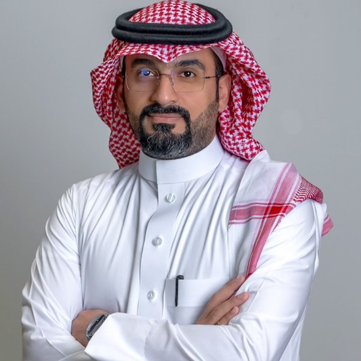

Technology strategy & digital transformation
Technology plans that start from the organisation's goals, with a clear roadmap to transform processes and improve the customer experience.
General Manager, Information Technology & Digital Transformation
Thirteen-plus years in IT, climbing every layer of it: from user support and server rooms, to planning the infrastructure of a national authority, to leading technology strategy and digital transformation.
To me, technology is measured by the organisational goals it delivers.

Each stage of my career sat one layer higher in the technology stack, so I know what runs beneath every strategic decision before I make it.
Six areas I have worked in deeply, from shaping the strategy to running it day to day.
Technology plans that start from the organisation's goals, with a clear roadmap to transform processes and improve the customer experience.
Unified policies, standards and procedures, with IT audits and regulatory compliance kept on track.
Planning data centres, servers, storage, networks and power to grow steadily without waste or bottlenecks.
Protecting data and technology assets, with disaster-recovery plans that bring services back quickly after any disruption.
Writing RFPs, selecting vendors, negotiating contracts and holding partners to their SLAs.
Building high-performing teams, managing technology budgets, and presenting strategy and performance to the executive team and the board.
By the grace of God, then the support of leadership and the work of the team.
Honoured by the Governor of the General Authority of Zakat and Tax for his efforts in delivering the Real Estate Transaction Tax project.
General Authority of Zakat and TaxNov 2020
A certificate of thanks for his contributions and exceptional performance, and his work toward the targets of the Technical Systems & Digitisation Agency.
General Authority of Zakat and Tax2020
Part of the Zakat, Tax and Customs Authority team that took first place in the 2023 National Transformation Measurement.
Zakat, Tax and Customs AuthorityDec 2023
What I write about running technology when the plan meets reality.
In a world of digital transformation and fast-moving business, managing technology resources is no longer optional — it is essential to sustained performance.
12 Feb 2026Read the piece
Planning is not just drawing up a timeline or writing requirements; it starts with a clear vision and an understanding of user needs.
12 Feb 2026Read the piece
The outage that hit the whole world is a reminder of the most basic rule of IT change management.
19 Jul 2024Read the piece
Advice on technology strategy, governance or infrastructure planning, or an invitation to speak at an event.